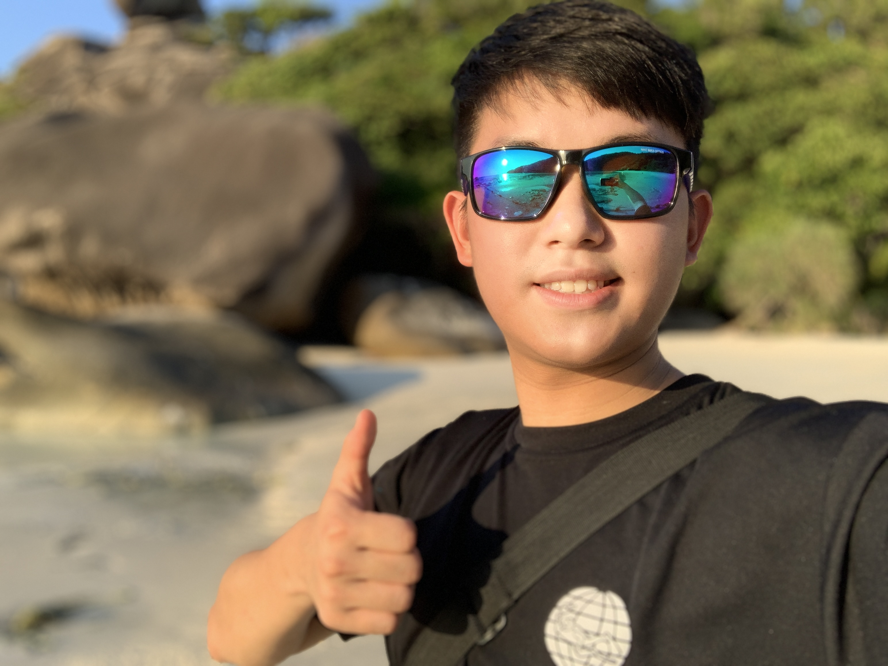
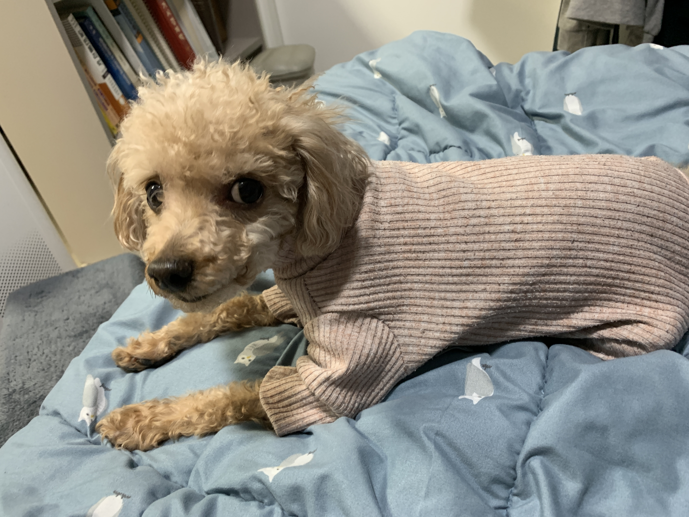

About Junwon
Junwon's Waffle Studio Resume
-

2019
Self Introduction
click here!"물 들어올 때 노 저어라!" 평소에 게으르던 준원은 2019년 소개원실 수업을 맞이하여 웹 개발을 공부하고 있습니다. 간단한 포트폴리오 사이트를 만드는 것부터 시작하여, 소개원실 과제와 프로젝트를 진행하며 웹 개발을 익히는 중입니다. 더 나아가서 와플 스튜디오 활동도 해보고자 합니다. 원래 웹 개발에 관심이 많았는데, 그동안 안했습니다. 이번 기회에 똑똑한 동기와 와플장 아래에서 배워보려고요.
-

지원동기
"Lets Study Hard"
웹 개발을 열심히 하고 싶었습니다. 하지만 혼자서는 동기부여가 되지 않았어요. 다양한 아이디어를 생각만 합니다. 프로젝트에 참여하면서 더 배우고, 동기들 그리고 동아리원들과 친해지며 같이 성장하고 싶어요! 복잡한 웹 프로젝트에서 어떻게 협업을 하는지, 프론트엔드와 백엔드에서 개발을 어떻게 하는지, 잘 개발하려면 어떻게 해야하는지, 아이디어를 실제로 옮기려면 어떻게 해야하는지 등을 공부하고 싶습니다. 현재 진행되고 있는 다양한 프로젝트들에 참여하고, 기회가 된다면 강의평 서비스를 만들어보고싶어요!
-

개발 경력
Let's Do it!
C / C++, Python Java, Javascript를 다룰 줄 압니다. 학교에서 다양한 과제를 경험하고 개인 연구 등을 하며 실력을 늘렸습니다. 웹 서비스로는 고등학교 때 안드로이드 앱을 만들어 본 경험이 있습니다. 2019년 1월 SK 하이닉스에서 인턴을 하면서 웹 개발은 아니지만, 윈도우에서 C를 이용한 GUI 기반 프로젝트 개발을 했습니다. 비록 지금까지 아주 많은 개발경력은 없지만, 앞으로 많은 개발을 해보려고 합니다. 열심히 해보려고 해요.
-

Finally
Believe in Junwon
Junwon을 믿으세요! 그리고 함께해요! 실망하지 않아요.
-
See
You
Soon